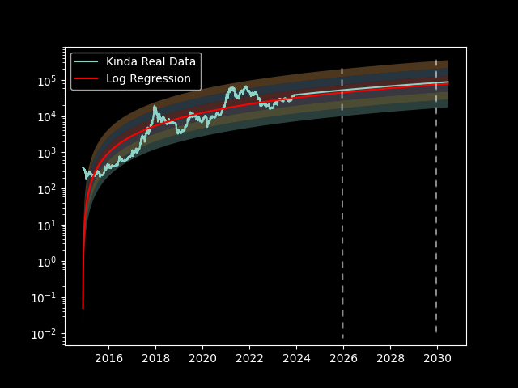
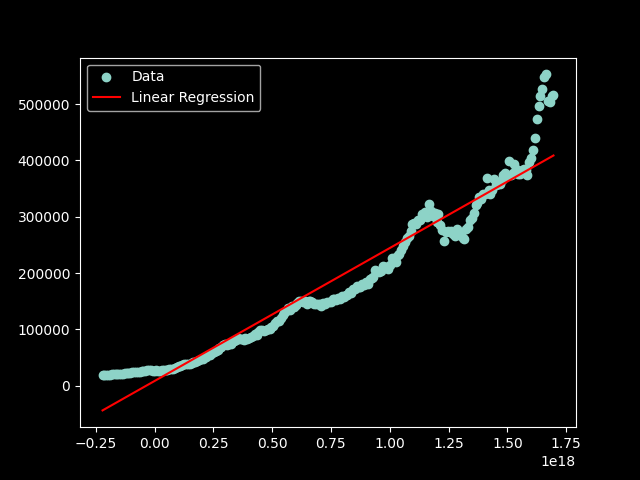
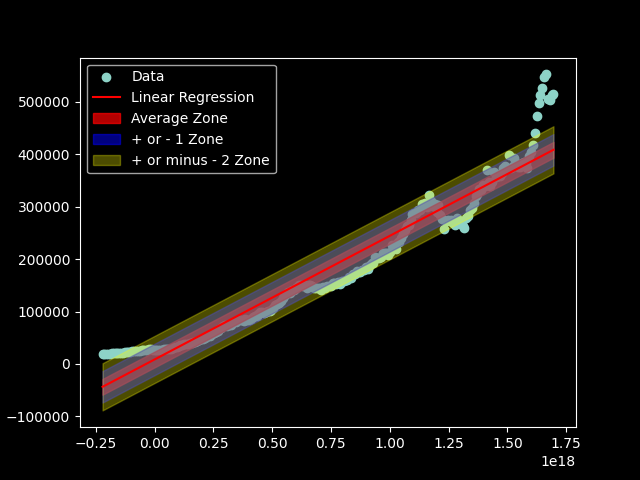
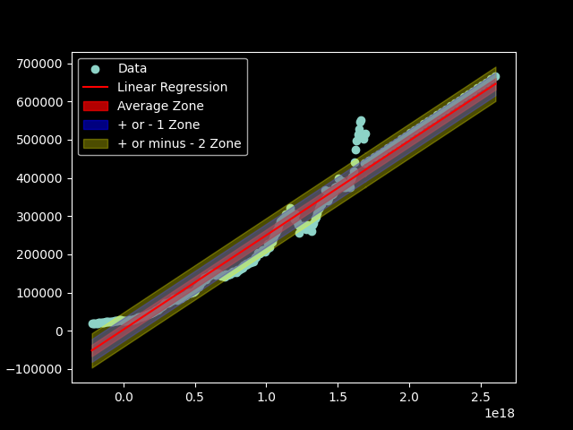

Should I buy Bitcoin or Real Estate?
Coming to a conclusion using Mathematical Modeling
By: Leo Carten - Updated: 11.29.30
Estimated read time: 15 minutes
What is Bitcoin? True peer to peer transactions
Bitcoin is a decentralized digital currency that enables peer-to-peer transactions without the need for a central authority or government. It operates on a technology called blockchain, a distributed ledger that records all transactions across a network of computers.
In simlper terms: When John swipes his visa vard to buy groceries, a bank is used as third party to ensure that:
- John has enough money in his account to make the purchase.
- John hasn't surpassed his spending limit.
- John's transaction is recorded in the bank's centralized system.
Now, imagine John made this purchase using Bitcoin...
- There's no need for a central authority like a bank or government.
- Transactions are verified by a distributed network of computers (nodes) rather than a single entity.
- The information about the transaction is securely recorded on a blockchain, providing transparency.
At the end of the day, Bitcoin allows people like John to make digital transactions without the need for intermediaries, in a secure and transparent way. Whether you think having a distributed network to control money is a good or bad thing is up to you...
What is a blockchain? A public ledger everyone can see
A blockchain is a collection of blocks that are chained together. Each block contains a maximum amount of transactions, in the context of Bitcoin, the maximum blocksize is 1MB, or about 2,000 transactions. Every 10 minutes or so, a new block is published onto the blockchain. Each block is published via miners.
DID YOU KNOW
VISA can perform ~20,000 transactions per second, while Bitcoin can only perform about 6 transactions per second. This is a fundamental error with how the blockchain operates, since each blocksize has a maximum size of 1MB.
At the end of the day, a blockchain is just a giant ledger that contains every transactiion that has ever occured. Earlier I stated how in a centralized banking system, transactions are stored in a database. You can think of a blockchain as a distributed database that everyone has access to. To build on the example above, imagine anyone wanted to view John's transaction. They could. They would see that John spent $17 at 3:30pm at Market Basket. You can see an example of a Bitcoin block here. If you visit this page, can can see the time the block was mined on, the amount of Bitcoin minted [brought into circulation], the total reward to the miner, etc. If you happen to scroll down, you can also view every transaction that occured inside of that block.
What role do Bitcoin miners play? Is it luck or skill?
Miners pay an integral part of maintaining blockchains. Miners need to run intense computer programs to generate hashes. Bitcoin uses adjustment algorithms that can re-correct [in real time] how many digits of a hash a miner needs to guess. A hash is a function f(x)=n, such that the input string x will always be mapped to the output string n. Hashes have a property such that generating a hash is simple, but reverse engineering a hash [trying to derive the value of x from n] is nearly computationally impossible.
Imagine you are at a casino and someone hands you a dice, but not a normal dice. Instead, this dice has 10,000 sides. The rules of the game are simple: Role the dice and land on a number less than 100 to win. Statistically speaking, the odds of this are very low. But, this is exactly what Bitcoin mining is. See, Bitcoin uses a Proof of Work (PoW) mechanism to create blocks. The proof in this case is how many attempts they took to guess a random string to try to generate a matching hash. Let's go back to the casino for a moment. Let's say Ricky finally roled a value less than 100 - so Ricky wins. The work that Ricky had to put into winning [rolling the dice many, many times] is similiar to how the Bitcoin miner had to consume a lot of resources [such as electricity] to generate a maching hash.
DID YOU KNOW
1 bitcoin transaction takes 1,449 kWh to complete, which is equivalent of approximately 50 days of power for the average US household.
Remember earlier how I said Bitcoin uses a real time self correction algorithm? It's going to all come full circle in a moment. When we are at the casino, and there are only 3 people playing the dice game, we need to roll less than a 100 on a 10,000 sided dice. This ensure there will be a lot of work put into winning the prize. Now, let's imagine there are 20,000 people playing this game. The winner is much more likely to have to put in less work, right? Bitcoin is like this too - the more miners, the quicker blocks can be generated. Bitcoin can algorithmically decrease the winning value, i.e. changing the winning value of less than 100 to less than 3...
Once someone finally rolls a value less than 3, all 20,000 players can look down and either agree, or disagree that the value is less than 3. Similiarlly, all nodes in the distributed network can agree that the correct hash was generated. Once this is done, the transaction is stored inside of that block on the blockchain, forever, and a new block is displayed for miners to do the same thing all over again.
Miners are incentivised to play because of the rewards that come with generating the correct hash. The initial reward for mining a Bitcoin block was 50 Bitcoin. This value is halved every 210,000 blocks that get published, and on average, publishing 210,000 blocks takes approximately 4 years. So, from the initial creation of Bitcoin in 2009 to 2013, miners we rewarded 50 Bitcoin per block. From 2013 to 2017, miners were rewarded 25 Bitcoin per block, then 12.5 per block from 2017 to 2021, then 6.25 from 2021 to 2025, etc. This halving is what makes Bitcoin deflationary, as there will be a finite amount of Bitcoin ever in circulation.
DID YOU KNOW
If we you were lucky enough to mine a singular Bitcoin block in 2009, the USD value of your reward today would be $1,850,000.
Leo's Bitcoin Price Models How much can one of these things be worth?
All of the following data was generated from
Yahoo Finance by parsing their free CSV files for Historic Price Data.
The price of Bitcoin can be seen with the following graph:

There have been many attempts to model the future prices of Bitcoin:
-
Time Model
As it implies, the time model suggests that the price of Bitcoin depends on how long it has been along, i.e. suggesting that the level of adoption will grow as time goes on.
The equation I found best for time modeling is:
Price = 0.003*(2010-currentYear)^7
Although I did research this model extensively, I just did not find enough evidence to believe a model like this is as useful as the 2 below models.
-
Stock to Flow
The stock to flow model is a model that can generate a scarcity ratio for commodities, i.e. gold, silver, etc. The higher the ratio, the more scarce the assets. This price model suggests that the price of Bitcoin goes up because there is a finite amount of Bitcoin that will ever be in circulation, which is 21,000,000.
You can derive this with the Python code:
def getTotalCirculation():
initial_year = 2009
reward_amount = 50
total_bitcoin_in_circulation = 0
for i in range(1, 200):
if i % 4 == 0:
total_bitcoin_in_circulation += reward_amount * 210000
reward_amount = reward_amount / 2
initial_year += 4
print(f"In year {initial_year}, there will be {total_bitcoin_in_circulation:.3f} Bitcoin in circulation.")
getTotalCirculation()
The code above will spit out that by year year 2141, there will already by 20,999,999.999 Bitcoin in circulation, and will never exceed 21,000,000.
The stock to flow can be generated each year by dividing the total in circulation by the amount of Bitcoin that will come into circulation that year.
Using the data from the Yahoo CSV, we can visualize the basic relationship between stock and flow:

Further, we can also generate an estimated price using the stock to flow relationship via this formula created by me: price=((stock/flow)^3)*0.4

Please note, in the above, I also implemented a pre-processing smoothing algorithm to smooth the jumps between pricing data to ensure higher accuracy. Below, I show Smoothing vs. No Smoothing vs. True Price:

As you can see, my model is actually pretty accurate until this year. Both the smoothed, and un-smoothed price generated prices near $77,000 even though the current price hovers around $37,000. My stock to flow model estimates Bitcoin to be priced at $680,000 sometime in 2025 and 2026. Personally, I think the value is on the high side. Below, I use Logramithic Regression to come to, what I believe, is the most accurate price assessment of Bitcoin.
-
Logarithmic Regression
Logarithmic Regression is just like linear regression except you use a Logarithmic function to fit your data...
Below I describe how I was able to fit a Logarithmic curve on my dataset:
# Important note: The 'Close' column in the CSV is the Closing price for Bitcoin that day...
import pandas as pd
import numpy as np
from scipy.optimize import curve_fit
import matplotlib.pyplot as plt
import csv
# Load the data from an external CSV file
df = pd.read_csv('predicted.csv')
df['Date'] = pd.to_datetime(df['Date'])
# Define the fitting function
def func1(x, point1, point2):
return point1 * np.log(x) + point2
# Create x and y data for fitting
xData = np.array([x + 1 for x in range(len(df))])
yData = np.log(df['Close'])
# Perform curve fitting
optimal_parameters, pcov = curve_fit(func1, xData, yData, p0=(3.0, -10))
# Plot the data and the fitted line
fitted_y_data = func1(xData, optimal_parameters[0], optimal_parameters[1])
plt.style.use('dark_background')
# Plot the real data from the CSV
plt.semilogy(df['Date'], df['Close'], label='Real Data')
# Plot the fitted curve
plt.plot(df['Date'], np.exp(fitted_y_data), label='Log Regression', color='red')
# Use a loop to create the 'rainbow' effect to encapsulate majority of the real data
for i in range(-2,4):
plt.fill_between(df['Date'], np.exp(fitted_y_data+(i/2 -.5)), np.exp(fitted_y_data+(i/2)), alpha=0.3)
# Show the graph [Yay!]
plt.legend()
plt.show()
In essance, this code takes a giant CSV file, plots all the associated points, and then finds a Logramithic function to neatly fit the data. The image below shows the result of the code above:

To extrapolate this data, you can write a function based on the Logarithmic Regression function and actually generate an exact price of Bitcoin for any specific day in the future!
For example, based on this red curve maps the price to a date. You can write a function like so to map a future date to a new price based on the fitted curve:
...
# Define a function to predict prices for new dates based on fitted curve
def predict_price_for_new_date(new_date):
x_value = len(df) + 1 + (new_date - df['Date'].iloc[-1]).days # Extrapolate based on the time difference
return np.exp(func1(x_value, popt[0], popt[1]))
...
From here, we can write some code that iterates from 2023-11-30 to 2030-06-15, uses the function from above to return an estimated price, and then append that to an array to use later:
...
# Starting date
current_date = pd.to_datetime('2023-11-30')
# End date
end_date = pd.to_datetime('2030-06-15')
huge_array=[]
# Loop through the dates
while current_date <= end_date:
new_array=[]
predicted_price = predict_price_for_new_date(current_date) #generate the new price
new_array.append((current_date.strftime('%Y-%m-%d')))
new_array.append("-")
new_array.append("-")
new_array.append("-")
new_array.append(predicted_price*1.52)
new_array.append("-")
new_array.append("-")
huge_array.append(new_array)
# Increment the current date by one day
current_date += pd.DateOffset(days=1)
...
Now, the variable huge_array contains all of the extrapolated data that we can write to a brand new CSV file using the following code:
...
with open("predicted.csv", 'a') as fd: # open the new CSV
writer = csv.writer(fd)
for i in huge_array:
writer.writerow(i) # write all of the data from the 'huge_array'
fd.close()
...
And at last, we create create a graph that predicts the new price of Bitcoin to 2030! This is shown below:

Below is an image of just the Logramithic Regression for a cleaner look:

The extrapolated data above suggests that sometime between the years 2026 and 2028, Bitcoin could reach a maximum value of $230,000, but could also reach a minimum value of $35,000.
-
Other existing models that exist that I did not explore
Ellion Wave Theory - a Technical Analysis that looks for patterns based on crowd psychology [i.e. how the average-joe reacts to price flucations].
Difficulty Price Model - how the price of computational power required to validate blocks translates to the price of a Bitcoin [if the price to validate blocks costs more than the price to just straight up invest, miners can save money and buy Bitcoin instead of mining].
Bitcoin Price Model Limitations There are no good models, only some are useful
There are a lot of variables that go into creating a model like this. A lot of variables translates to limitations in models accuracy. I will list a few below...
Examples of Model Limitations may happens because:
-
Black Swan Event
A Black Swan event is when some unforseeable [random] event occurs that no model can predict. For example, in May of 2021 Tesla announced that they would no longer be accepting Bitcoin as a form of payment. This occured because the Tesla stock was dropping because they were being hypocritcal in the eyes of investors for promoting energy efficent technology, but allowing payment in Bitcoin, which is very in-effecient as we discussed earlier. Further, in 2021 China banned Bitcoin mining. 50% of the world's bitcoin mining power was generated in China before the crackdown, the global bitcoin economy felt the pain of China's bitcoin mining ban.
DID YOU KNOW
The 2 events listed above caused the price of Bitcoin to plummit about $10,000.
-
GPU prices
Since miners use very expensive computational devices to mine Bitcoin, the price of the hardware required to mine blocks can play a role. If the technology becomes cheaper, more people will start mining, and if the price rises, less people will want to begin mining. Luckity, the Bitcoin network can somewhat adjust for this price flucation per the real time difficulty algorithm discussed earlier.
-
Others
Media hype, government regulations, electricity prices, oil prices, where in the Bitcoin halving cycle we are.
What is Real Estate? Land vs. Real Estate
Real Estate in any land or property that has man-made features, or features that are permanently attached to it. Some real estate is more expensive than others, for example, waterfront properties have historically been more expensive to buy than traditional houses.
The terms land and real estate are often used interchangeably, but this is not correct...
Land is the physical earth that something is built on. There is a finite amount of land. Land includes the trees, rocks, rivers, oceans, streams, and anything else that can naturally consume space. Different types of land are found in various spots of the world. For example, a desert, where the primary component of the land is sand, may be harder to build and maintain human environments compared to a place which is comprised of trees, soil, and water.
Real Estate is the man-made changes that have been added to the land which bring value. For example, septic systems, apartments, houses, and water management systems are all changes that can be done to land to generate value. We call these changes improvements. Improvements to land are expensive, because you need to pay for the material, labor, etc.
At the end of the day, real estate and the man-made changes to a section of land that can generate value, of which people can invest in.
DID YOU KNOW
McDonalds is considered a Real Estate company because they own the underlying land that a franchisee can rent out.
The different types of Real Estate Residential vs. Commercial vs. Industrial
There are 3 main categories of Real Estate, which are Residential, Commercial, and Industrial...
Residential Real Estate is the name most commonly associated with Real Estate - this is the Real Estate people live in. This can include houses, apartments, condos, town houses, etc. Residential Real Estate can be broken down into subcategories, which depend on the size of the property/housing unit. For example, there are single family homes, multi-family homes, and other unique type of living arrangements. Often times, the land or geographical area can incentive certain age ranges of people, which can translate to the types of homes. For example, mountainous and countryside properties often attract older people, or people with families. Suburban neighborhoods usually attract people who want, or people who have a family. And apartments / condos can attract younger, single people.
Commercial Real Estate is real estate needed by companies to carry out their business, and differs from Residential real estate because Commercial Real Estate investors assume no one will be living in their property [except for Commercial Real Estate like Hotels], rather only carrying out operations of business. For example, Commercial real estate includes shopping malls, grocery stores, parking lots, hospitals, college campuses, etc.
Industrial Real Estate is real estate that is used for factories, manufacturing, production, research, construction, transportation, data centers, etc. For example, this website is currently being served by a server located somewhere in San Francisco, California. This server is maintained by Digital Ocean in a giant data center. This Real Estate, AKA, the data center hosting this website, is considered to be Industrial Real Estate. Other examples may include yogurt factories, Amazon warehouses, Industrial Building, etc.
Price factors of Real Estate Internal vs. External
There are 3 main categories of Real Estate, which are Residential, Commercial, and Industrial...
There are so many different factors that can determine the current value of a piece of Real Estate. I am going to break these into 2 main categories, internal and external factors.
Internal factors can include the age of the property, the condition of the property, the conditions of the improvements around the real estate [is the property operating on a septic system that was built 100 years ago?], the size of the property.
External factors include things outside of the property, such as the land surrounding the property [i.e. neighborhoods], crime rates, the price of labor, the price of electricity, the price of materials, the current state of the US economy, the current state of the US housing market, human population growth.
This list is just scratching the surface, there are many more, but these are the main factors I thought were important noting.
Leo's Real Estate Price models Putting a monetary value to Earth's crust
Below is a chart I derived from the data to represent price growth since 1963:

-
Time Model
A time model is useful to model Real Estate Price because of the ever-growing population of humans compared to the finite amount of Earth's Crust.
There have been some numbers thrown around, such that real estate appreciates on average 3.2% each year. I used Python to parse and clean the data, and I used Google Sheets to find the average. I derived the value 2.9%.
Using an average growth rate of 2.9%, we can extrapolate price and create a chart that estimates Real Estate price to 2030:

This model puts the average price of Real Estate in 2030 somewhere around $620,000.
-
Linear Regression Model
Linear regression is when you find a line of fit based on scattered points. Below is the code that I used to generate the Linear Regression:
import pandas as pd
import matplotlib.pyplot as plt
from scipy.stats import linregress
# Read the CSV file
df = pd.read_csv('real_estate.csv')
df['Date'] = pd.to_datetime(df['Date'])
# Convert 'Date' to numeric values (UNIX timestamp)
df['Date'] = pd.to_numeric(df['Date'])
# Extract x and y values
x = df['Date']
y = df['Price']
# Perform linear regression
slope, intercept, r, p, std_err = linregress(x, y)
# Show the equation
print(f"The equation y={slope}x+{intercept} has an r^2 value of {r}.")
# Plot the scatter plot
plt.scatter(x, y, label='Data')
# Plot the regression line
plt.plot(x, intercept + slope * x, 'r', label='Linear Regression')
# Show the graph
plt.legend()
plt.show()
The above code yeilds that following output: The equation y=2.359175846746714e-13x+8546.37896436386 has an r^2 value of 0.9663313878706447.

By adding the following code, we can create "zones" around our linear regression to see over and under extensions in our model:
...
regression_line = intercept + slope * x
margin = 15000
upper_mean_bound = regression_line + margin
lower_mean_bound = regression_line - margin
margin = 15000*2
upper_mean_plus_one_bound = regression_line + margin
lower_mean_minus_one_bound = regression_line - margin
margin = 15000*3
upper_mean_plus_two_bound = regression_line + margin
lower_mean_minus_two_bound = regression_line - margin
plt.scatter(x, y, label='Data')
# Plot the regression line
plt.plot(x, regression_line, 'r', label='Linear Regression')
# Shade the area between the upper and lower bounds
plt.fill_between(x, lower_mean_bound, upper_mean_bound, color='red', alpha=0.7, label='Average Zone')
plt.fill_between(x, lower_mean_minus_one_bound, upper_mean_plus_one_bound, color='blue', alpha=0.5, label='+ or - 1 Zone')
plt.fill_between(x, lower_mean_minus_two_bound, upper_mean_plus_two_bound, color='yellow', alpha=0.3, label='+ or minus - 2 Zone')
...
This will produce the following graph:

Notice how our zones nicely encapsulate majoirty of the chart except for the most recent spike in 2019? One can conclude from this that the market is over-extended, and we are due for a price correction soon.
We can also extrapolate data based on the graph we have just created. Below I show the code that allows us to extrapolate this to year 2050. Please note, I did slightly change the function from the previous section to be measured in days by indexing, rather than UNIX timestamps...
...
import csv
import datetime
huge_array = []
def writeToCSVFile():
year = 2023
for i in range(251, 500, 4):
if year > 2052:
break
else:
new_array = []
price = 1964 * i - 53974
date_time = datetime.datetime(year, 7, 26, 21, 20)
new_array.append(date_time.strftime('%Y-%m-%d'))
print(f"In year {date_time.strftime('%Y-%m-%d')}, the price will be {price}")
new_array.append(price)
huge_array.append(new_array)
year += 1
writeToCSVFile()
with open("real_estate.csv", 'a') as fd:
writer = csv.writer(fd)
for i in huge_array:
writer.writerow(i)
fd.close()
...
Results:

As I said earlier, the market right now is very over-extended as we can see via the linear regression trendline. A price correction is due for, probably within the next 2 or 3 years. However, this model predicts the price of Real Estate in 2050 to have a high of $700,000 and a low of $540,000.
Conclusion
It is clear from the models above that both Bitcoin and Real Estate seem be an appreciating asset. The choice to invest comes down to a few aspects, such as risk tolerance, investment strategies, long term vs. short term, diversification strategies, and available liquidity.
Based on the linear regression analysis on Real Estate, and the logramithic regression on Bitcoin, I think Real Estate is a much more safe bet. The reason being is because of predictability of price flucuations. The r^2 value for the Bitcoin analysis was something near 60%, while the Real Estate r^2 value was 96%. As an investor, I like the 96% because it offers me a safer return on investment. However, I am not discarding Bitcoin. I think a wise investor is one who diversifies him/herself to optimize their return on investment in different markets and niches.
Personally, I would expose about 20% of my portfolio to cryptocurrencies in general. It'd be an educated investment to make gains based on the cyclical trends cryptocurrencies seem to follow, but it wouldn't be enough to tremendously damage my portfolio if some unforseeable event occurs, such as discussed in Bitcoin Price Model limitations.
Overall, I'd continue to follow to 80/20 principle, where I invest 80% of my portfolio into safe assets, such as Real Estate, Mutual Funds, Bonds, and save the other 20% for more volitile assets, such as cryptocurrencies, NFTs, and option trading.